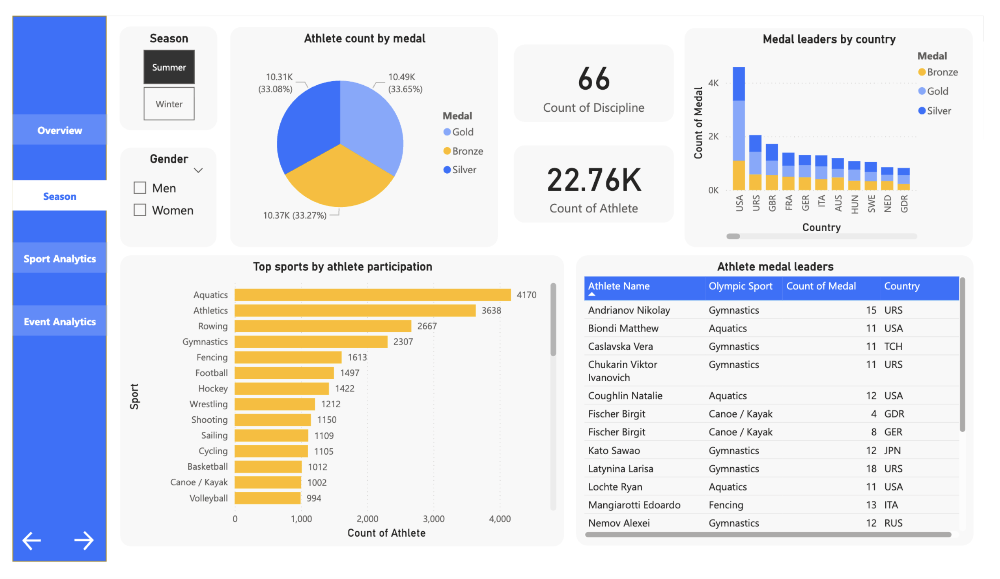
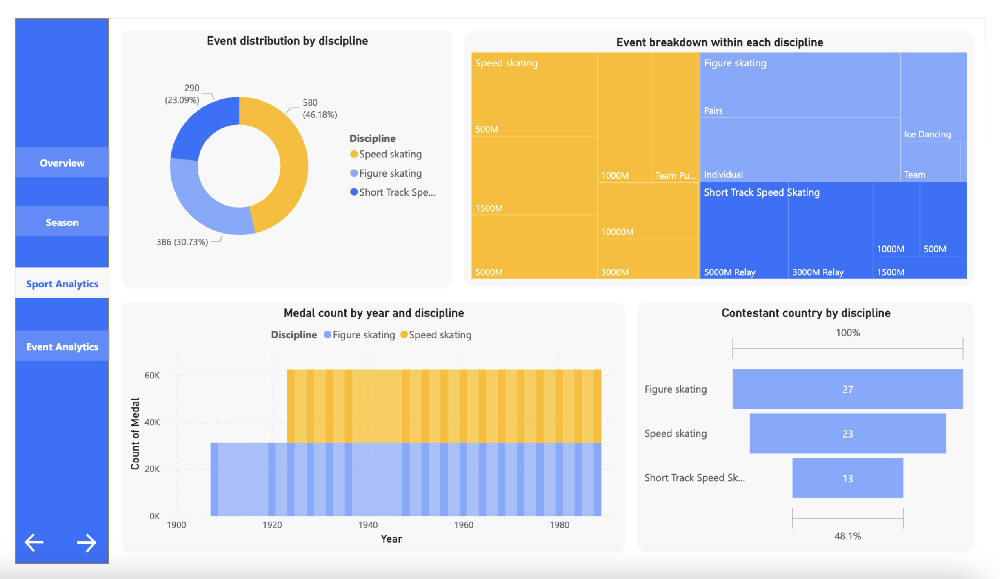
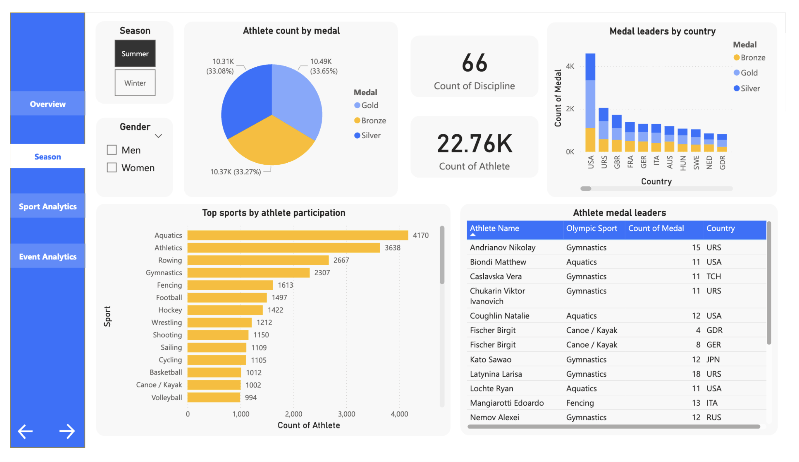
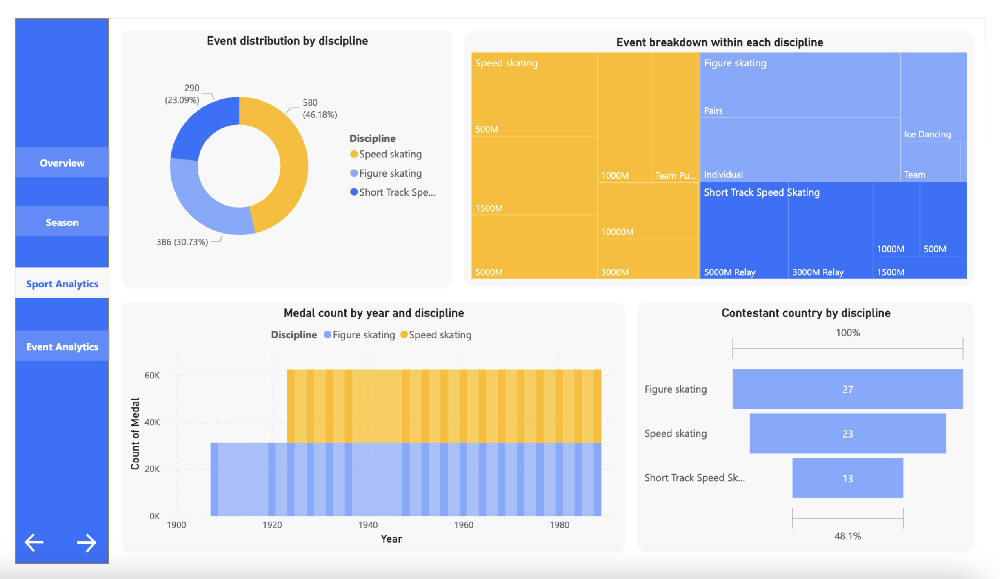

Сентябрь 2024 — настоящее время
Образовательный фонд "IQANAT"
IT Ментор
IT Ментор
- Разработала и реализовала аналитические проекты с использованием Python и SQL.
- Провела полный аналитический цикл: сбор и очистка данных, EDA, расчёт метрик (Accuracy, Precision, Recall, MAE), интерпретация результатов.
- Подготавливала визуализации и аналитические отчёты, адаптируя проекты в формате обучающих кейсов.
- Обучала основам экспериментального анализа и интерпретации данных.
- Проводила занятия по C++, 3D-анимации (Blender), UI/UX-дизайну и основам frontend-разработки.
 


